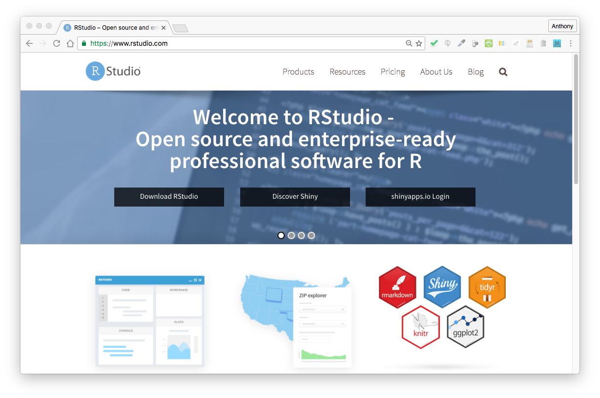
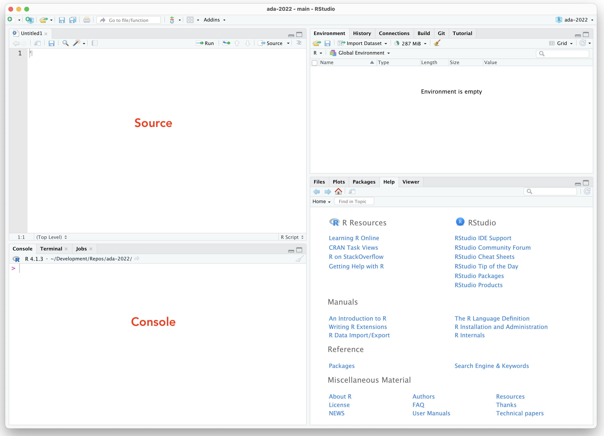
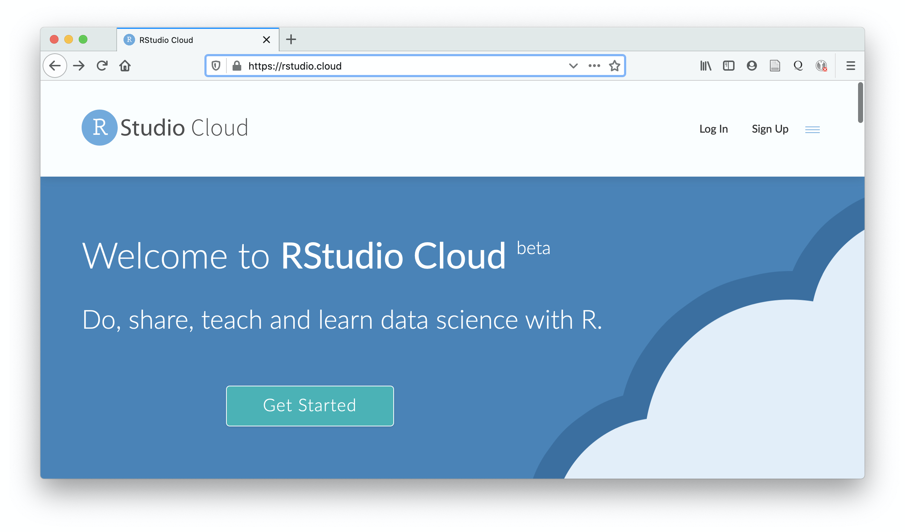
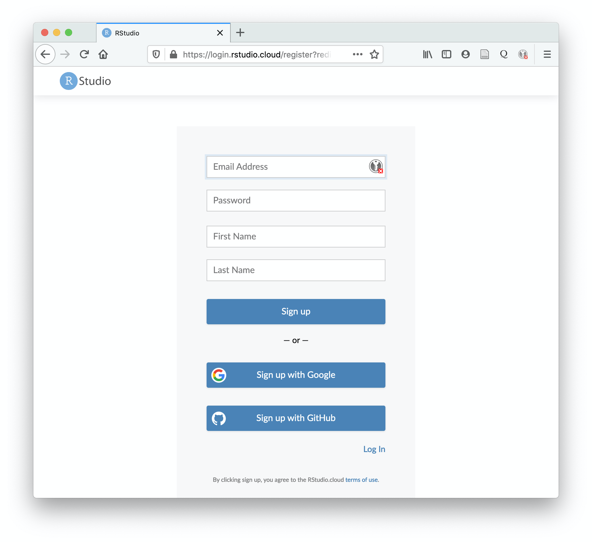

7 Module 02
8 Getting Started with RStudio
8.1 Objectives
The goal of this module is to familiar yourself with the RStudio Integrated Development Environment (IDE).
8.2 Installing the RStudio Software
Apart from the GUIs included in the MacOS and Windows installations of R, there are several IDEs that connect to the R interpreter and provide lots of convenient functionality. One of the most versatile and easy to use (and my favorite) is RStudio.
- Download and install the RStudio Integrated Development Environment (IDE)
- Open the RStudio program
The workspace that you see is divided into four separate panes (Source and Console panes on the left, two customizable panes on the right). You can modify the layout and appearance of the RStudio IDE to suit your taste by selecting Preferences from the RStudio menu (MacOS) or by selecting Global Options from the Tools menu (both MacOS and Windows).

The Source pane is where you work with and edit various file types (e.g., scripts), while the Console pane is where you run commands in the R interpreter and see the results of those commands. The other two customizable panes provide easy access to useful tools and overviews of your interactions with R. For example, the Environment tab can be used to view all of the objects in the different environments in your current workspace, the History tab shows the log of all of the commands you have sent to the interpreter, and the Packages tab provides a convenient interface for installing and loading packages (see below).
Within RStudio, you can change the working directory by going to the Session menu and selecting Set Working Directory.
CHALLENGE:
Repeat the basic maths CHALLENGE from Module 01 using the editor and console in RStudio.
NOTE: In both the base GUI that ships with the R application and in RStudio, the console supports code completion. Pressing
TABafter starting to type a function or variable name will give you suggestions as to how to complete what you have begun to type. In RStudio, this functionality is present also when you are typing code in the text editor in the Source pane. Also helpful in RStudio are popup windows that accompany code completion that show, for each function, what possible arguments that function can take and their default values.
8.3 Using the RStudio Cloud Server
An alternative (though likely slower!) way to use R and RStudio is to run them through a browser from RStudio’s cloud computing server. To use this approach, visit the RStudio Cloud website, click the Get Started button, and create or sign up for an account.

You can use a Facebook or GitHub account to sign up (I recommend the latter. See Module 05 for more info on signing up for and using GitHub) or create a new account that is specifically for RStudio Cloud.

Once you are signed up, or if you have already done so, you can use your account to log in. Doing so will bring you to the landing page for your RStudio Cloud account.

Your account lets you access a sandboxed environment on RStudio’s servers that contains R, RStudio, any packages you install, your own files, etc., which you are connecting via a web browser. You can effectively use it for development without storing anything on your local machine.
There, if you create a New Project, you will set up a new R project within your account space. Your account space can include multiple projects, each with its own set of associated files.

8.4 Customizing the RStudio IDE
If you open either the Preferences (MacOS) or Global Options (MacOS or PC) dialog box in RStudio you can customize the setup and functionality of your IDE.
In the General section, I recommend the settings shown below, particularly about restoring your last workspace into memory upon startup and about asking if you wish to save the contents of your current workspace upon shutdown.

Feel free to organize the rest of your setup as you would like. For example, you can change lots of options in the Code, Console, Appearance, and Pane Layout sections to set up the IDE as best suits your personal tastes.

Finally, if you have already installed git on your computer, go to the Git/SVN section and make sure that the checkbox “Enable version control interface for RStudio projects” is selected and that the path to your git executable is filled. If you have installed git successfully, this should be filled with something like “/usr/bin/git”. If it is not, do not worry… we can set this later after installing and troubleshooting that program.

Concept Review
- Installing, navigating and customizing the RStudio IDE
- Running R and RStudio through a browser using RStudio Cloud